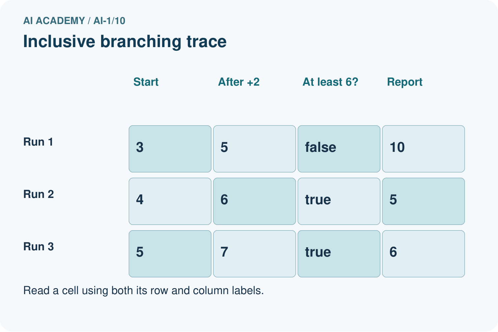
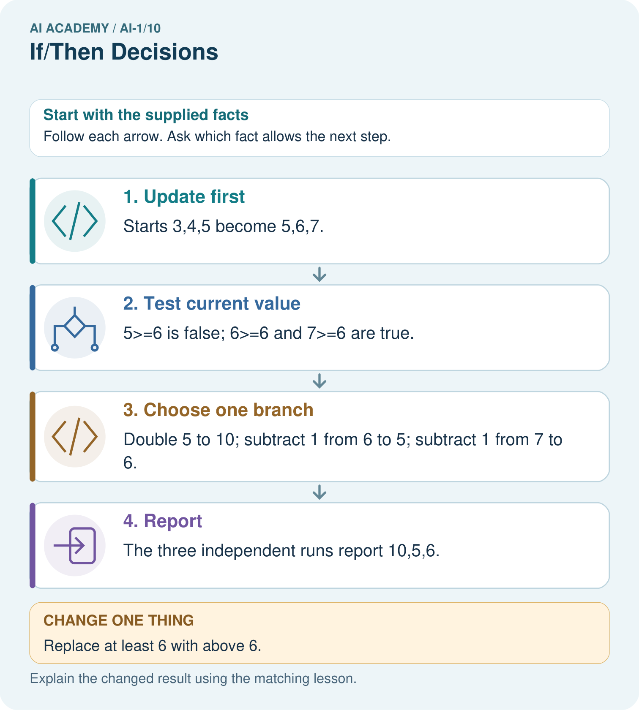
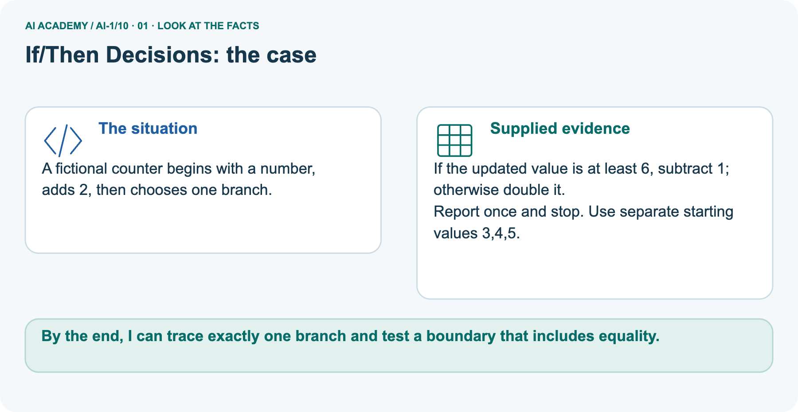
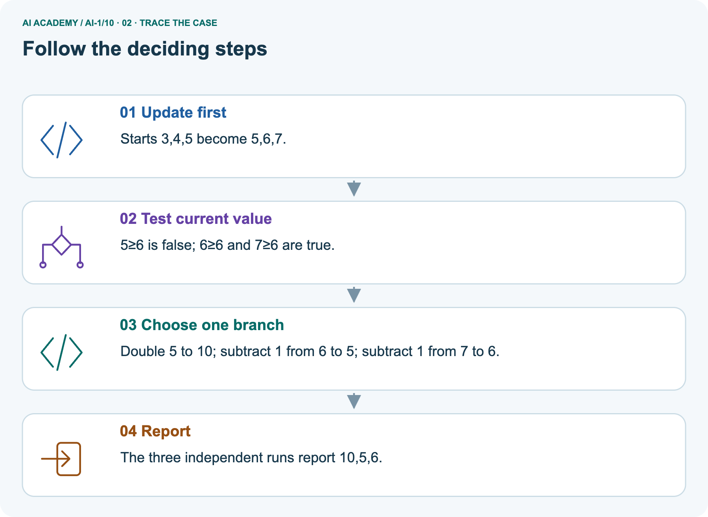
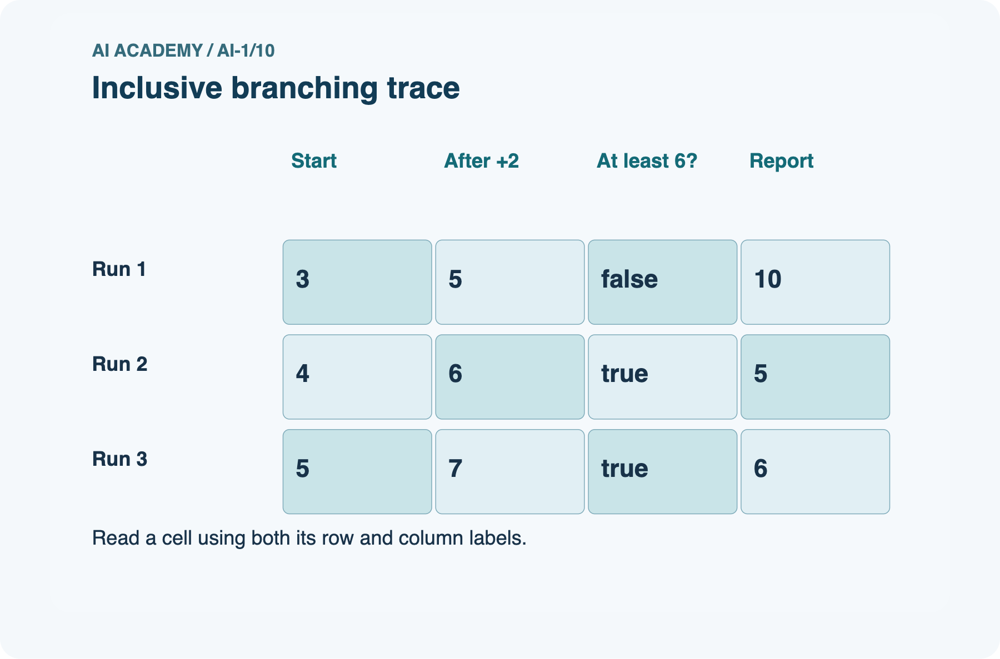
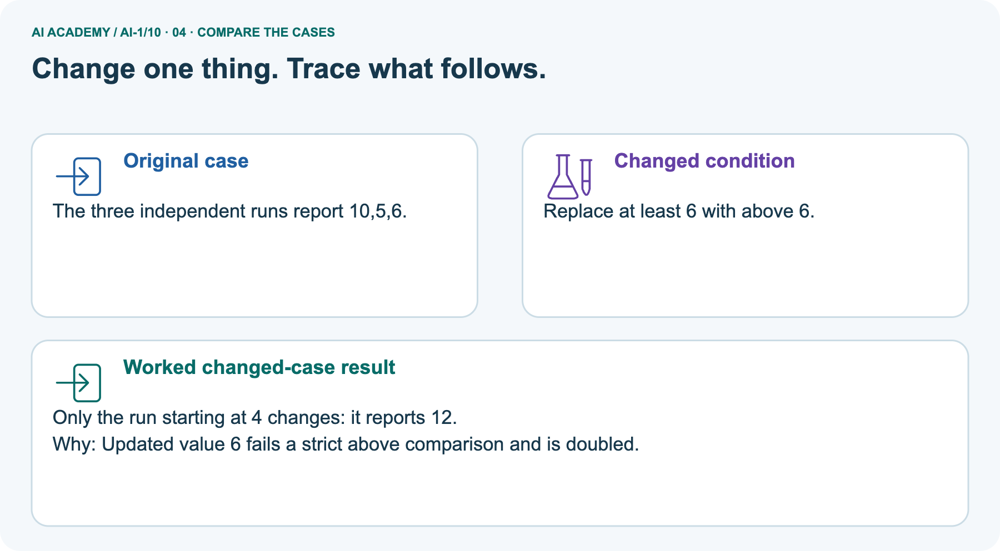
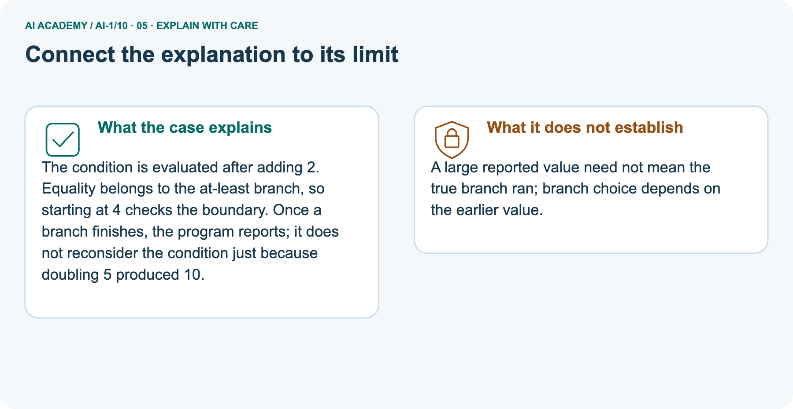
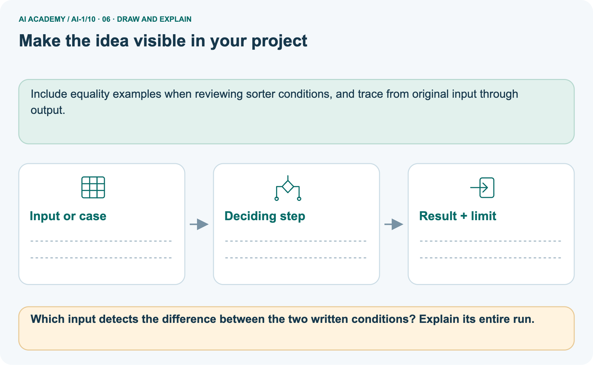

AI Academy · Level 1 · Grade 6 · Week 10 · Teacher guide
If/Then Decisions
Learn to understand, design, build, test and explain AI systems responsibly.
Project: Helpful Classroom Sorter
Teacher guide · 1 of 9
If/Then Decisions
Prepare If/Then Decisions: check the target, prerequisites, resources and adaptable teaching schedule.
Teach the learning cycle
Primary target: Evaluate a condition using the current state and trace only the selected branch
| Session | Sequence and minutes | Resources |
|---|---|---|
| Session 1 · Understand · 45 min | 0–7: recall and prerequisite; 7–15: inspect the concrete case and predict; 15–30: teacher models the worked trace; 30–40: learners explain a step using the text and visual; 40–45: check the core idea. | Use Your mission, Notice the evidence, See how it works, Compare the cases, Words that unlock the idea and Follow a worked example; record the brief recall in the workbook. |
| Session 2 · Practise · 45 min | 0–5: retrieve the procedure; 5–15: W2 completion practice; 15–23: explain and check with a partner; 23–30: each learner answers the misconception check; 30–40: targeted reteaching or a harder variation; 40–45: prepare the investigation. | Use Find and repair a mistake, Practise together, Run the investigation and Build your understanding; use the matching workbook W2 and misconception check. |
| Session 3 · Investigate and transfer · 45 min | 0–5: retrieve the decision rule; 5–20: investigate or trace; 20–30: start the independent case; 30–38: connect the project; 38–43: act on feedback; 43–45: plan the return check. | Use Run the investigation, Connect your project, Show what you know, Study a complete case and Try a new case independently. Allow extra time for the full task set. Use a coding lab only when this week actually provides one; Your lesson route is the planning section. |
This is a starting allocation of 135 minutes, not a validated duration. Preserve all named topics. Schedule extra time for connected examples, the full investigation, independent cases and project building.
Repeated copies of a case share one recorded attempt; they are not new evidence.
Retrieval answer guidance
Algorithms as Recipes
Without opening the old lesson, explain one key idea from Algorithms as Recipes. Give an example and a mistake that the idea helps you avoid.
Look for: Trace an ordered algorithm using the current value after every instruction
Reference example, not the only acceptable wording: The trace is 3, 7, 14, 9. The doubling step uses 7, the current value after adding 4 to 3. It must not double the initial 3.
Accept a table, arrows or clearly labelled sentences that preserve the order.
Categories and Labels
Without opening the old lesson, explain one key idea from Categories and Labels. Give an example and a mistake that the idea helps you avoid.
Look for: Apply a category definition using explicit evidence and boundary rules
Reference example, not the only acceptable wording: In order: ready because both known fields pass; revise because 31 exceeds 30; review because the known day passes but the room is unknown; revise because the known day failure has priority over the unknown room.
Equality at 30 is accepted.
Rules or Learned Patterns?
Without opening the old lesson, explain one key idea from Rules or Learned Patterns?. Give an example and a mistake that the idea helps you avoid.
Look for: Execute a stated rule including its boundary
Reference example, not the only acceptable wording: At least 5 gives narrow, wide, wide. Greater than 5 gives narrow, narrow, wide. Only the equality case changes among these inputs.
Use the student module and workbook section with this exact week title. The worked case, independent question and answers below form one aligned lesson sequence.
What the learner must demonstrate
A club admits a visitor if they have a ticket AND an accompanying adult. Test all four yes/no combinations. A student changes AND to OR. Which outcomes change?
Concept to explain
Conditions make an algorithm branch when information changes.
| Term | Meaning |
|---|---|
| condition | question evaluated as true or false |
| branch | path selected by a condition |
| threshold | value where a decision changes |
| else | path used when earlier conditions are false |
Prepare the class
Use the supplied scenario, student illustrations and blank paper. For numeric work, offer counters or a calculator after learners show the setup. Fictional records are supplied; personal data and paid accounts are unnecessary.
Alternative compact allocation
This compact option is not the full-week schedule. Use the main teaching cycle and allow extra sessions for the investigation, independent work and project.
Allow 80 minutes: recall 8; explanation 12; worked demonstration 15; guided practice 20; independent assessment 15; project and reflection 10. Extend the lab into a second session when needed.
Preparation for the connected explanation
This week combines current-state tracing with a single if/else decision. Use known whole-number scores first, then explicitly introduce missing input. Separate testing a condition from updating a value.
At least and at most include equality; above and below exclude it. Exactly one branch runs for each decision reached. A changed value does not cause the decision to repeat unless another test is explicitly specified.
All game and brightness examples are paper simulations.
Readiness answer
The addition changes score to 6, so the next instruction doubles 6 and produces 12. Each instruction reads the current state.
A score box, an add-2 card, and a paired if/otherwise instruction card with report and stop beneath it
A three-column trace headed Current value, Test result and Chosen update, plus cards 5, 6 and 7
The brightness-display task from W4 for independent work, and one unreadable-value card
End goal for the pictorial case
By the end, I can trace exactly one branch and test a boundary that includes equality.
This added worked case illustrates the week’s main idea. Retain all original and connected topics; schedule its practice within the teaching cycle.
Teacher guide · 2 of 9
Explain the mechanism
Model If/Then Decisions using the supplied case, labelled mechanism and reasoning. Make the scope of each conclusion explicit.
Follow the information instead of imagining magic inside the machine.
2. Process — the deciding step
PROCESS check ordered if/then conditions
3. Output — the result
OUTPUT clothing suggestion and reason
Key idea
CORE IDEA Conditions make an algorithm branch when information changes.
How the mechanism works
UNDER THE HOOD A conditional evaluates a Boolean expression and selects a branch. Order matters when conditions overlap. Complete decision logic needs explicit handling for boundary values and an else path.
Draw a fresh example with all three stages:
Every step connects a claim to observable evidence.
The case to investigate
CASE A clothing helper follows different paths depending on temperature, rain, and wind conditions.
Step 1
STEP 1 — OBSERVE weather values
Step 2
STEP 2 — TRACE check ordered if/then conditions
Step 3
STEP 3 — CONCLUDE clothing suggestion and reason
Model answer
MODEL REASONING Each test follows the stated condition order. The exactly-at-threshold case reveals whether the rule uses less than or less-than-or-equal. Rain-plus-cold needs combined outputs or a clear priority.
A claim to avoid
DO NOT OVERCLAIM Never hide an unhandled case between two thresholds.
What new evidence could change this answer?
Concrete teaching case
The teaching case
If a card has a star, send it to A; otherwise send it to B.
The teaching case
Sort a star, a circle, and a card with both shapes.
Exact explanation to model
Why the result follows
Star and mixed cards go to A because both have a star. The circle goes to B. The test is has a star, not has only a star.
Explain the added worked example
Explain the added worked example · 1
A paper game updates a score with this procedure: add 2 to score; if score is at least 6, subtract 3 from score; otherwise add 4 to score; report score and stop. The if and otherwise instructions form one if/else decision.
Exactly one of those branches runs each time this decision is reached.
A condition asks whether a statement is true for the current state. At least 6 means 6 or any larger number. If score is 6, the condition is true. If score is 5, it is false.
The condition itself does not change score; the chosen branch performs the update.
Start score at 4. First add 2, giving 6. Now test the current 6: the condition is true, so subtract 3 and report 3. Testing the original 4 would choose the wrong branch.
Write the state immediately before the condition so the evidence for the choice is visible.
Compare the three values immediately around the threshold. These are the values when the condition is reached, after the initial add-2 instruction.
Testing only a value far above 6 would not show whether equality was handled correctly.
Above 6 is different: it means strictly greater than 6, so 6 itself does not pass. At most 6 means 6 or smaller. Below 6 means strictly smaller, so it excludes 6. Say the equality case aloud before using one of these phrases.
A condition can be true even when its chosen action makes the number smaller. True describes the test result; it does not mean good, bigger, or a successful game. The written instructions define the action.
Key terms
| Term | Meaning |
|---|---|
| Condition | A test whose result is true or false when the required information is known |
| Branch | The instruction or group of instructions selected by a condition |
| Threshold | The value used as a comparison boundary |
| Inclusive boundary | A boundary whose equality case is included |
| Boundary test | A test using a value at or close to a point where behaviour can change |
Model the reasoning aloud
Use the complete worked example below before asking learners to complete W2. Reveal a small part, invite a prediction, then explain the deciding step.
These teacher notes contain solutions; do not reveal the independent case answer during modelling.
| Initial score | State and condition after adding 2 | Branch and final score |
|---|---|---|
| 3 | 5 is not at least 6 | Add 4 and report 9 |
| 4 | 6 is at least 6 | Subtract 3 and report 3 |
| 5 | 7 is at least 6 | Subtract 3 and report 4 |
Model the reasoning aloud · 2
In the first run, the false branch increases 5 to 9. That does not make the earlier decision run again. The procedure has already chosen and carried out the otherwise branch, so it moves on to report and stop.
Subtracting 3 afterward would incorrectly run both branches and report 6.
This rule applies to one if/else decision. A later, separate condition would be a new test of the state at that later point. Do not invent an extra test or loop because the value crossed the threshold.
Follow only the instructions in the procedure.
| Thinking move | Teacher prompt |
|---|---|
| Plan | What is given? What is the question? Which procedure fits these facts? |
| Do | Point to each input and intermediate step in the worked trace. Name the rule that allows the next step. |
| Check | Does the output answer the question? Which assumption or limitation prevents a larger claim? |
Use the diagram and verbal explanation together. Ask learners to match a sentence to a specific visual step; do not assign learners fixed visual or auditory learning styles.
A pictorial worked case: If/Then Decisions
A fictional counter begins with a number, adds 2, then chooses one branch.
The facts we will use
Supplied facts
If the updated value is at least 6, subtract 1; otherwise double it.
Supplied facts
Report once and stop. Use separate starting values 3,4,5.


Read the picture one step at a time
Why this result follows
Why the result follows
The condition is evaluated after adding 2. Equality belongs to the at-least branch, so starting at 4 checks the boundary.
Once a branch finishes, the program reports; it does not reconsider the condition just because doubling 5 produced 10.
What this example does not establish
Keep the stated limit
A large reported value need not mean the true branch ran; branch choice depends on the earlier value.
Change one thing in the pictured case
Change one thing
Change: Replace at least 6 with above 6.
Predicted result
Prediction: Only the run starting at 4 changes: it reports 12.
Why the result follows
Reason: Updated value 6 fails a strict above comparison and is doubled.
Ask while showing the picture
Ask while showing the picture · 3
Cover the result. Ask learners to name the inputs and predict the next step. Uncover one step, connect the icon to the actual procedure, and explain its evidence. Then change the supplied condition and compare.
The picture is a representation; it does not document execution of a real AI model.
Teacher guide · 3 of 9
Demonstrate and guide practice
Demonstrate If/Then Decisions, reduce support deliberately and check individual reasoning before discussing answers.
Board sequence
1. Put the facts on the board
Write the given facts: If a card has a star, send it to A; otherwise send it to B.
2. State the decision to explain
Write the question to explain: Sort a star, a circle, and a card with both shapes.
3. Reveal the worked reasoning
Reveal after predictions: Star and mixed cards go to A because both have a star. The circle goes to B. The test is has a star, not has only a star.
Hold back the independent task
Keep for an independent attempt: Use this exact rule: if a card has more than three dots, place it in tray A; otherwise use tray B. Trace cards with 2, 3 and 4 dots.
Classroom dialogue
Ask the class
Ask: Which facts are given, and which would we have to assume? Learners mark relevant details before discussing answers.
Language to model
Say: Predict first. Show the rule, information path or calculation that would produce the result. A correct guess is not yet an explanation.
Reveal reasoning one step at a time. Explain why a tempting alternative fails. Write units and denominators for arithmetic, trace conditions for decisions, and identify supporting sources for claims.
In pairs, one learner solves while the other checks evidence; exchange roles. Remove the worked answer before independent assessment.
Model these guided questions
Choose initial score 4: add 2 to reach 6. Under at least 6, the test is true and subtracting 3 gives 3. Under above 6, it is false and adding 4 gives 10. Equality distinguishes the versions; test values 5 and 7 do not.
The exit answer is 6 at the condition, since it is included by at least but excluded by above. If testing from the start of the whole procedure, use initial 4 to reach that value.
Case-specific teaching sequence
| Stage | Teacher action |
|---|---|
| Session 1 start 0 to 7 minutes | Retrieve the current-state rule from Week 9 using start 4, add 2, double. Record 4,6,12 before introducing a condition. |
| 7 to 20 minutes | Model the paper-game procedure from initial score 4. Mark the value 6 at the test and show that the test itself changes no value. |
| 20 to 33 minutes | Compare values 5,6,7 at the condition. Say equality aloud for at least, above, at most and below. Keep separate runs visually separate. |
| 33 to 45 minutes | Complete W1 and W2 in pairs. Require a true/false result and chosen branch alongside each final value. |
| Session 2 start 0 to 8 minutes | Trace initial score 3 to current 5, then false branch to 9. Point to report and stop so crossing the threshold does not trigger another branch. |
| 8 to 23 minutes | Use W3 to diagnose running both branches. Complete the guided equality test and compare expected versus copied instructions. |
| 23 to 38 minutes | Collect W4 independently. Check whether students evaluate at most on 6,7,8 rather than on the starting 3,4,5. |
| 38 to 45 minutes | Use W5 to distinguish unknown from false. Discuss the exit test and preview explicitly repeated tests in loops. |
Reduce help deliberately
Completion practice
Completion task: The known value at a condition is exactly 6. Decide whether each test is true or false: at least 6; above 6; at most 6; below 6. Explain which phrases include equality.
Then name one value below and one value above 6 for neighbouring tests.
Reasoning to listen for
Teacher check: At least 6 is true, above 6 is false, at most 6 is true, and below 6 is false. At least and at most include equality; above and below are strict.
The nearest whole-number neighbours are 5 and 7; other correctly identified lower and higher values are valid but are less close to the boundary.
Start by identifying the given inputs together. Leave the intermediate steps blank. If needed, model one step, then withdraw that help on the next step. Move to a full trace only when the partial trace is understood.
For partners, alternate explainer and checker; collect a response from every learner before discussion.
Individual reasoning check
Use the worked case for Conditions and boundary cases. Proposed explanation: “The condition reads the starting value”. Decide whether this explanation is supported.
Point to the step or supplied fact that decides; explain your repair if needed.
Expected repair
Expected correction: Trace the initial add-2 instruction first and circle its result before evaluating the comparison.
Collect explanations, not only yes/no votes. If a misunderstanding is common, re-model the relevant step for the class.
If it affects a few learners, give a short targeted group explanation while others solve a more demanding variation.
Pictorial practice question
Which input detects the difference between the two written conditions? Explain its entire run.
Reasoned teacher answer
Start 4: add 2 gives 6. The rule that includes equality subtracts 1 to report 5; the strict rule doubles to report 12.
Changed-case reasoning: Only the run starting at 4 changes: it reports 12. Updated value 6 fails a strict above comparison and is doubled.
Collect each learner’s explanation before discussion. Use the first missing connection between input, deciding step and result to choose support. This question is worked-case practice, not fresh mastery evidence.
Teacher guide · 4 of 9
Run the weekly evidence lab
Run the If/Then Decisions investigation and use the first unsupported step to choose a teaching response.
Predict first, test honestly, and explain what the evidence means.
1. Predict
State your prediction before the result is known.
2. Investigate
Complete the task: Build a weather-clothing rule and test four cases.
3. Compare cases
Keep a normal case and an edge case clearly separated.
4. Record honestly
Record what happened—even when it does not match your prediction.
5. Explain and plan the next test
Explain the result, one limitation, and the next useful test.
Use a fresh case after support
INDEPENDENCE After support is removed, repeat the proof with a fresh case.
Make the lab runnable
Use the concrete case as the shared normal case and the independent question as a second case. Each pair creates a boundary or missing-information case and predicts its result before testing.
Keep the expected result separate from an observed mistake.
| Record | What to capture |
|---|---|
| Input or evidence | Exact data, instruction or claim |
| Expected result | Answer or safe fallback declared before the run |
| Observed result | Actual result, including errors |
| Explanation | Rule, calculation or evidence explaining the outcome |
| Next test | One justified change and a new prediction |
Diagnose and reteach
Find the unsupported claim
CLAIM TO REPAIR More than three includes three.
For guessing, return to given facts and request a trace. For vocabulary without application, use one example and one non-example. For arithmetic errors, check the setup before the calculation.
Finish with a different uncoached case before recording mastery.
Address these additional misconceptions
The condition reads the starting value: Trace the initial add-2 instruction first and circle its result before evaluating the comparison.
At least means strictly above: Put 6 on the boundary and read at least as 6 or more. Compare its true result with above 6, which is false.
Crossing the threshold runs the other branch: Follow the chosen branch to report and stop. A second test must be explicitly written; it is not implied by the new value.
An unknown value makes the test false: Show that the unreadable value could be 5 or 6. Different possibilities select different branches, so the exercise requires a pause and clarification.
Match the support to the first error
| What the response shows | Next teaching action |
|---|---|
| Missing or misread facts | Read the case aloud, mark supplied versus unknown facts, and let the learner restate it. |
| Wrong procedure | Return to the deciding step in the worked case. Contrast it with the proposed incorrect explanation. |
| Arithmetic or implementation error | Trace intermediate values or lines; preserve the first mismatch and retry that step. |
| Correct result without a reason | Ask for a trace and a changed case before marking independent understanding. |
| An unsupported wider claim | Ask which supplied evidence supports the claim and which further observation would be needed. |
Offer an oral explanation, drawing, enlarged visual or fewer examples when that removes a reading/writing barrier. Keep the same reasoning goal.
Stretch secure learners by changing a boundary or assumption and asking them to defend the effect, not simply by assigning more of the same questions.
Teacher guide · 5 of 9
Assess and explain the answers
Use the If/Then Decisions questions, teacher keys and criteria after the relevant attempts. Previously discussed cases are practice; protect the separately selected independent task.
Worked case answer
Teacher key · Worked case answer
Star and mixed cards go to A because both have a star. The circle goes to B. The test is has a star, not has only a star.
Independent question
Independent question · withhold the key
Use this exact rule: if a card has more than three dots, place it in tray A; otherwise use tray B. Trace cards with 2, 3 and 4 dots.
Expected independent answer
Teacher key · Expected independent answer
Two and three dots go to B; four goes to A. More than three excludes three. The boundary case reveals whether the condition was read precisely.
What counts as evidence
| Criterion | 0 points | 1 point | 2 points |
|---|---|---|---|
| Result | Incorrect or absent | Partly correct | Correct with necessary conditions |
| Reasoning | No supporting trace | Some steps | Clear mechanism, calculation or source support |
| Limit | Overclaims certainty | Vague limitation | Relevant uncertainty or missing fact |
| Transfer | Copies without adapting | Adapts with prompts | Solves a changed case independently |
Use 6/8 as a classroom checkpoint, with 2 required for both Result and Reasoning. This is a proposed teaching rule, not a validated certification threshold.
Do not count a coached answer as independent mastery; correct unsafe or unsupported claims regardless of total.
Feedback
Ask the learner to find the evidence that challenges this claim: “More than three includes three.” Keep the first attempt and an uncoached retry separate.
Original transfer answer
Teacher key · Original transfer answer
With AND only ticket=yes/adult=yes is admitted. With OR the two mixed cases are also admitted; no/no is still refused. AND requires both conditions, whereas OR requires at least one.
The policy must be chosen before judging the code.
Explanations for the additional workbook examples
W1 Trace a decision from the current score
Workbook question · W1
Use the paper-game procedure: add 2 to score; if score is at least 6 subtract 3, otherwise add 4; report and stop. Start at 2, then make a separate run starting at 5.
For each run record the value at the condition, its true or false result, the branch and the final score.
Teacher reasoning · W1
Start 2: after adding 2 score is 4; at least 6 is false; add 4 and report 8. Start 5: after adding 2 score is 7; at least 6 is true; subtract 3 and report 4. Each run starts fresh and executes only its selected branch.
W2 Read four boundary phrases
Workbook question · W2
The known value at a condition is exactly 6. Decide whether each test is true or false: at least 6; above 6; at most 6; below 6. Explain which phrases include equality.
Then name one value below and one value above 6 for neighbouring tests.
Teacher reasoning · W2
At least 6 is true, above 6 is false, at most 6 is true, and below 6 is false. At least and at most include equality; above and below are strict.
The nearest whole-number neighbours are 5 and 7; other correctly identified lower and higher values are valid but are less close to the boundary.
W3 Stop after the selected branch
Workbook question · W3
In a separate decision the current score is 4. If score is at least 5 subtract 2; otherwise add 3; report and stop. A learner adds 3 to get 7, then subtracts 2 because 7 is now at least 5, and reports 5.
Identify the extra action and give the correct trace and result.
Teacher reasoning · W3
The condition at score 4 is false, so only the otherwise branch runs. Add 3 to get 7, then report 7 and stop. The extra subtraction incorrectly runs the other branch after the decision.
Crossing the threshold does not repeat the test in this if/else procedure.
W4 Transfer the method to a new display
Workbook question · W4
A paper brightness display adds 3 to its starting number. If the current brightness is at most 7, subtract 2; otherwise add 1. Report and stop. Trace separate runs from starting values 3, 4 and 5.
Identify the run that tests equality. Then show how its result changes if at most 7 is accidentally written as below 7.
Teacher reasoning · W4
Start 3: 6 at the test, true, subtract 2, report 4. Start 4: 7 at the test, true, subtract 2, report 5. Start 5: 8 at the test, false, add 1, report 9. Starting at 4 tests equality.
With below 7, the current 7 fails, so add 1 and report 8 instead of 5. All three runs use current values after adding 3.
W5 Handle an unknown input explicitly
Workbook question · W5
The score is unreadable at the at-least-6 test. A helper says the test must be false and takes the otherwise branch. Explain what is unknown and why that choice is unjustified.
State the next step required by this paper exercise and give two possible scores that would select different branches.
Teacher reasoning · W5
The score value, and therefore the truth of the comparison, is unknown. It could be 5, which selects otherwise, or 6, which selects the true branch. Neither is established by an unreadable value.
Pause and request the missing score as specified; do not silently replace it with zero or treat the test as false.
Assess independent transfer
Independent question · withhold the key
Selected case: A paper brightness display adds 3 to its starting number. If the current brightness is at most 7, subtract 2; otherwise add 1. Report and stop. Trace separate runs from starting values 3, 4 and 5.
Identify the run that tests equality. Then show how its result changes if at most 7 is accidentally written as below 7.
Selected case answer
Teacher key · Selected case answer
Start 3: 6 at the test, true, subtract 2, report 4. Start 4: 7 at the test, true, subtract 2, report 5. Start 5: 8 at the test, false, add 1, report 9. Starting at 4 tests equality.
With below 7, the current 7 fails, so add 1 and report 8 instead of 5. All three runs use current values after adding 3.
| Dimension | Evidence required |
|---|---|
| Explanation | Names the applicable idea or procedure and ties it to the supplied facts. |
| Trace and result | Preserves the given inputs and shows the relevant intermediate steps; distinguishes a prediction from an observed execution. |
| Limits | States the assumptions, missing evidence or conditions under which the result would change. |
Teacher key · Selected case answer
Record each dimension as not yet, with support, or independent. Accept a valid alternative procedure with a defensible trace.
Do not penalise an honestly recorded model failure if the learner correctly explains its evidence and limits.
Feedback that the learner uses
Name the earliest unsupported step and give one action to repair it. Have the learner make that repair now and explain why. Then assess the relevant skill on a fresh, fully specified case.
Confirm it was not previously practised with feedback; solve and check the new case before assigning it. A follow-up design prompt is a starting brief, not automatically an equivalent test.
Teacher guide · 6 of 9
Connect and extend learning
Connect If/Then Decisions to Helpful Classroom Sorter, adapt support and plan a later changed-case check.
Helpful Classroom Sorter
Add one transparent if/then branch and one else path to the Classroom Sorter.
Keep the decision, input, result, explanation and remaining limitation in the project evidence record. Retrieve this record next week rather than restarting the project.
Support and stretch
Use physical cards, spoken explanations and a three-stage drawing. Read aloud without giving the answer. Stretch: compare two mechanisms with the same visible output and explain what evidence distinguishes them.
Exit reflection
Ask for one decision the learner can now justify and one situation requiring more evidence or human review. Confidence ratings are separate from correct independent performance.
Bridge to the next week
Next: Week 11: Repeating Efficiently. Retrieve today’s evidence and identify what carries forward and what is new.
Support and fresh reassessment
Provide a number line with the boundary labelled and let students read each comparison in words. Use text labels True branch and Otherwise branch in addition to colour. Supply a blank trace with the comparison row highlighted.
Extension: explain why checking 5,6,7 is useful but does not prove a program correct for every possible input or every unrelated implementation error.
W4 is secure when the learner traces all three runs, applies the test to the updated value, includes equality for at most, and explains the changed output under below.
A final answer without a branch reason is partial evidence. After support, retry with add 2 followed by if current value is at most 5 subtract 1, otherwise add 2.
From starts 2,3,4, the correct final values are 3,4,8 respectively.
Week 11 introduces loops and stopping rules. Students will distinguish one decision from an explicitly repeated test and trace when a loop stops.
Plan the delayed return
Suggested return points in this level: ai-1/11, ai-1/13, ai-1/16. Use actual classroom dates, adjusting for holidays and gaps. One, three and six teaching weeks are scheduling choices, not a claimed optimal spacing.
At a delayed check, ask for the idea from memory and a changed application. Compare with the earlier independent response and record support used.
For a new level, revisit the previous capstone before checking the new prerequisites.
| Record | Teacher evidence |
|---|---|
| Learner code and date | |
| Concept and case used; prior exposure | |
| Explanation / trace / limits | |
| Support and first repair | |
| Changed case and delayed outcome | |
| Next teaching action |
Use the evidence to choose reteaching or the next step. A completed page, confidence rating or attractive project does not by itself demonstrate understanding.
Project evidence from this case
Include equality examples when reviewing sorter conditions, and trace from original input through output.
Teacher guide · 7 of 9
Prepare, teach and assess
Use this preparation summary alongside the detailed If/Then Decisions lesson; it is a checklist rather than a replacement for the full sequence.
Teaching target
Teaching target: Evaluate a condition using the current state and trace only the selected branch
Prepare the labelled worked-case picture, the matching workbook, fictional input cards and a place for individual responses. No paid AI account is required for the paper reasoning activities.
| Session | Plan | Resources |
|---|---|---|
| Session 1 · Understand · 45 min | 0–7: recall and prerequisite; 7–15: inspect the concrete case and predict; 15–30: teacher models the worked trace; 30–40: learners explain a step using the text and visual; 40–45: check the core idea. | Use Your mission, Notice the evidence, See how it works, Compare the cases, Words that unlock the idea and Follow a worked example; record the brief recall in the workbook. |
| Session 2 · Practise · 45 min | 0–5: retrieve the procedure; 5–15: W2 completion practice; 15–23: explain and check with a partner; 23–30: each learner answers the misconception check; 30–40: targeted reteaching or a harder variation; 40–45: prepare the investigation. | Use Find and repair a mistake, Practise together, Run the investigation and Build your understanding; use the matching workbook W2 and misconception check. |
| Session 3 · Investigate and transfer · 45 min | 0–5: retrieve the decision rule; 5–20: investigate or trace; 20–30: start the independent case; 30–38: connect the project; 38–43: act on feedback; 43–45: plan the return check. | Use Run the investigation, Connect your project, Show what you know, Study a complete case and Try a new case independently. Allow extra time for the full task set. Use a coding lab only when this week actually provides one; Your lesson route is the planning section. |
Before class, solve the supported practice: The known value at a condition is exactly 6. Decide whether each test is true or false: at least 6; above 6; at most 6; below 6. Explain which phrases include equality.
Then name one value below and one value above 6 for neighbouring tests.
Supported practice answer
Reasoned practice answer: At least 6 is true, above 6 is false, at most 6 is true, and below 6 is false. At least and at most include equality; above and below are strict.
The nearest whole-number neighbours are 5 and 7; other correctly identified lower and higher values are valid but are less close to the boundary.
Check every learner before discussion: Use the worked case for Conditions and boundary cases. Proposed explanation: “The condition reads the starting value”. Decide whether this explanation is supported.
Point to the step or supplied fact that decides; explain your repair if needed.
Repair the misconception
Misconception repair: Trace the initial add-2 instruction first and circle its result before evaluating the comparison.
Support without giving away the answer
Support: read the exact case aloud, enlarge the labelled picture, supply input cards and model only the first deciding step. Accept a spoken explanation or drawing; retain the reasoning goal.
Extend the reasoning
Extension: Replace at least 6 with above 6. Require a prediction and a reason before comparing. Expected result: Only the run starting at 4 changes: it reports 12.
Reason: Updated value 6 fails a strict above comparison and is doubled.
Protect the independent attempt
Independent assessment: withhold the reserved answer until the learner has attempted the new case. Record support separately from correctness.
| Criterion | Not yet | With support | Independent |
|---|---|---|---|
| Explanation | Names an answer without a deciding fact | Uses a hint to link fact and decision | Explains the deciding fact in own words |
| Trace or test | Cannot connect input and result | Completes steps with prompts | Traces or tests a changed case accurately |
| Limits and revision | Claims more than evidence supports | Names a limit after a prompt | States a defensible limit and useful next test |
Project checkpoint
Project checkpoint: Make a transparent first version. Keep a trace of how one input becomes an output; explain the rule or learned component.
Use the weekly teacher answer for topic-specific reasoning. A saved progress tick is an activity record; judge mastery from the learner’s explanation and evidence.
Teacher guide · 8 of 9
Use feedback, labs and repair paths
Use feedback, earlier review and portfolios purposefully. Apply the coding routine only when this lesson has an executable lab.
Use the two formative questions as supported practice, not as independent mastery scores. Discuss the deciding evidence rather than accepting a guessed selection.
The feedback comes from the reviewed public worked case. Do not reveal the separately reserved independent teacher answer until the learner has attempted that case.
For later coding lessons
This week has no code block. Use this routine when a later lesson includes an executable lab.
Ask students to predict before running code. Preserve errors and actual outputs; collect a changed test and an explanation. The branch-boundary and indexing lessons deliberately include failure cases.
Use the earlier worked-explanation links to address a specific missing building block, then return to the current question. Adapt this suggestion after observing the learner; it is not an automatic diagnosis.
Collect the completed-work portfolio as evidence. Record support separately from correctness, and assess explanation, trace/test and limitations. Progress ticks and quiz selections alone do not establish mastery.
Teacher guide · 9 of 9
Visual concept journey
Show one If/Then Decisions graphic at a time, request a prediction and discuss its trace before the independent assessment.
Use one picture at a time. Hide a worked result before asking for a prediction, then reveal it for feedback. These are supported teaching cases; retain the separate independent assessment for a fresh first attempt.
01. If/Then Decisions: the case

A fictional counter begins with a number, adds 2, then chooses one branch. Supplied facts: If the updated value is at least 6, subtract 1; otherwise double it. Report once and stop. Use separate starting values 3,4,5.
Point to the given fact that matters most. Explain why it matters.
Discuss while showing the picture
Teacher prompt: Point to the given fact that matters most. Explain why it matters. Ask learners to describe one label or arrow in ordinary words. Use the adjacent transcript if the image is difficult to see.
02. Follow the deciding steps

Update first: Starts 3,4,5 become 5,6,7. → Test current value: 5≥6 is false; 6≥6 and 7≥6 are true. → Choose one branch: Double 5 to 10; subtract 1 from 6 to 5; subtract 1 from 7 to 6. → Report: The three independent runs report 10,5,6.
Point to each numbered stage and explain which recorded input it uses.
Discuss while showing the picture
Teacher prompt: Point to each numbered stage and explain which recorded input it uses. Ask learners to describe one label or arrow in ordinary words. Use the adjacent transcript if the image is difficult to see.
03. Inclusive branching trace

Inclusive branching trace. Run 1: Start = 3, After +2 = 5, At least 6? = false, Report = 10. Run 2: Start = 4, After +2 = 6, At least 6? = true, Report = 5. Run 3: Start = 5, After +2 = 7, At least 6? = true, Report = 6.
Read the labels and values. Explain the relationship the model shows.
Discuss while showing the picture
Teacher prompt: Read the labels and values. Explain the relationship the model shows. Ask learners to describe one label or arrow in ordinary words. Use the adjacent transcript if the image is difficult to see.
Check row/column meanings, units and denominators before discussing a difference. Supplied toy values are not real class or model results.
04. Change one thing. Trace what follows.

Original case: The three independent runs report 10,5,6. Changed condition: Replace at least 6 with above 6. Expected result: Only the run starting at 4 changes: it reports 12.
Reason: Updated value 6 fails a strict above comparison and is doubled.
Predict before checking the worked changed-case result. Name what changed and what the supplied facts allow you to conclude.
Discuss while showing the picture
Teacher prompt: Predict before checking the worked changed-case result. Name what changed and what the supplied facts allow you to conclude. Ask learners to describe one label or arrow in ordinary words.
Use the adjacent transcript if the image is difficult to see. Changed-case reasoning: Updated value 6 fails a strict above comparison and is doubled.
05. Connect the explanation to its limit

The condition is evaluated after adding 2. Equality belongs to the at-least branch, so starting at 4 checks the boundary.
Once a branch finishes, the program reports; it does not reconsider the condition just because doubling 5 produced 10.
Limit: A large reported value need not mean the true branch ran; branch choice depends on the earlier value.
Explain the case, then point to a limit on the claim.
Discuss while showing the picture
Teacher prompt: Explain the case, then point to a limit on the claim. Ask learners to describe one label or arrow in ordinary words. Use the adjacent transcript if the image is difficult to see.
Keep the stated scope: A large reported value need not mean the true branch ran; branch choice depends on the earlier value.
06. Make the idea visible in your project

Include equality examples when reviewing sorter conditions, and trace from original input through output. Draw your input, deciding step, result and limit.
Supported question: Which input detects the difference between the two written conditions? Explain its entire run.
Draw your project trace and justify the deciding step using evidence.
Discuss while showing the picture
Teacher prompt: Draw your project trace and justify the deciding step using evidence. Ask learners to describe one label or arrow in ordinary words. Use the adjacent transcript if the image is difficult to see.
Supported practice key: Start 4: add 2 gives 6. The rule that includes equality subtracts 1 to report 5; the strict rule doubles to report 12.